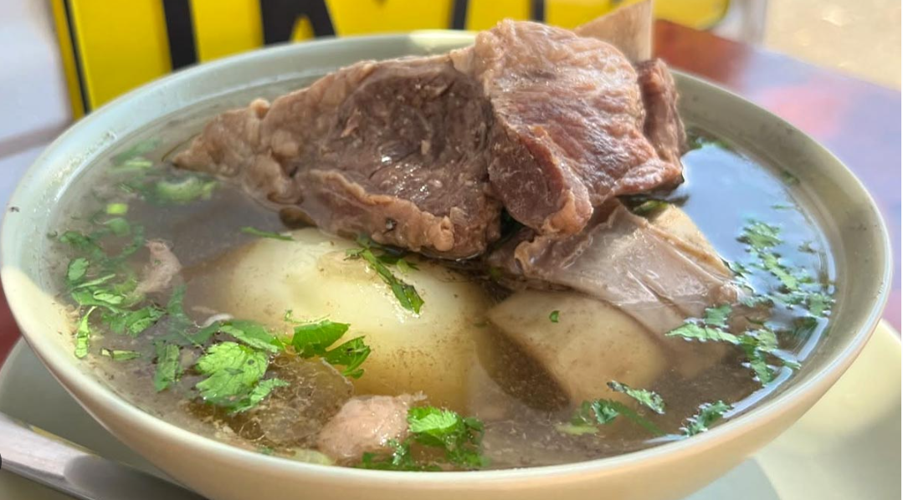

Usado para salir de la resaca y para los Keto, sin carbos
Caldo con Costilla

Caldo con Costilla
El caldo de costilla es originario de la región andina de Colombia, siendo un plato insignia de departamentos como Cundinamarca, Boyacá y Santander. Históricamente, proviene de las cocinas campesinas de esta zona, popularizado por la necesidad de un desayuno energético y caliente en las madrugadas frías de la sabana.
Ingredientes
- 1 libra de costilla de res
- 1 libra de papa pastusa
- Cilantro
- Sal
- Cebolla larga
Procedimiento
- Lavar y picar la costilla en porciones
- En la olla express colocar agua y gajo de cebolla larga y una cucharadita de sal
- adicionar la costilla en la olla express, taparla y poner a fuego lento por 45 minutos
- Mientas pelar la papa, lavarla y picarla por mitades
- una vez los 45 miutos pasen, adicionar la papa volver a tapar y a fuego lento por 15 minutos mas
- Pique el cilantro y la cebolla pequeño, luego mezclar estos dos elementos
- Para emplatar sirva el caldo con su porcion de costilla, papa y adicione una pisca de cilantro y cebolla picado.
Volver a Pagina Principal